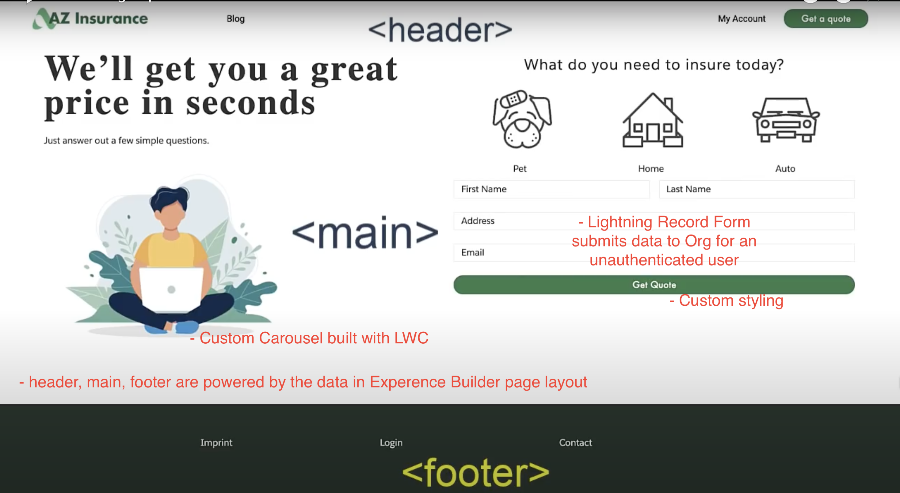
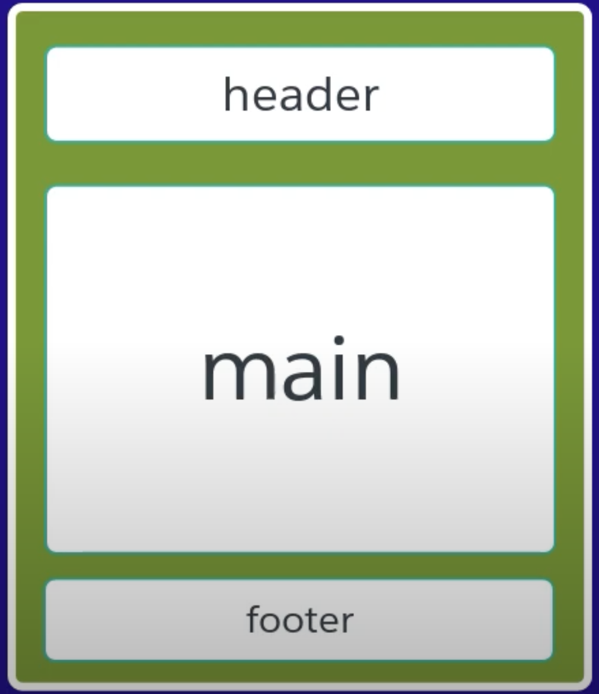
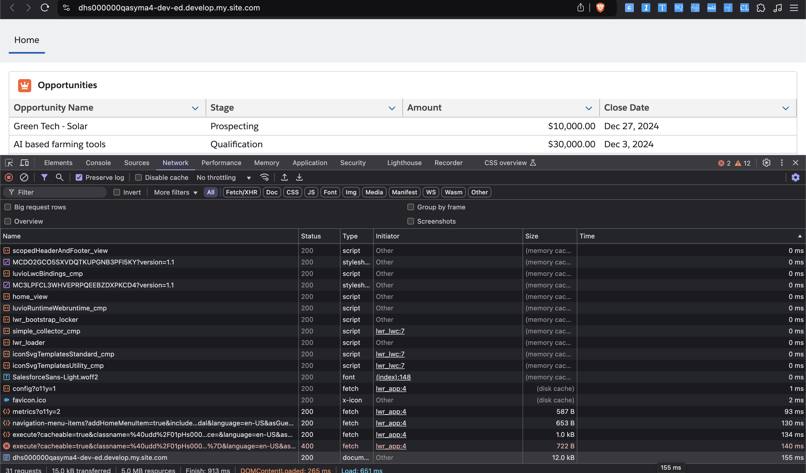
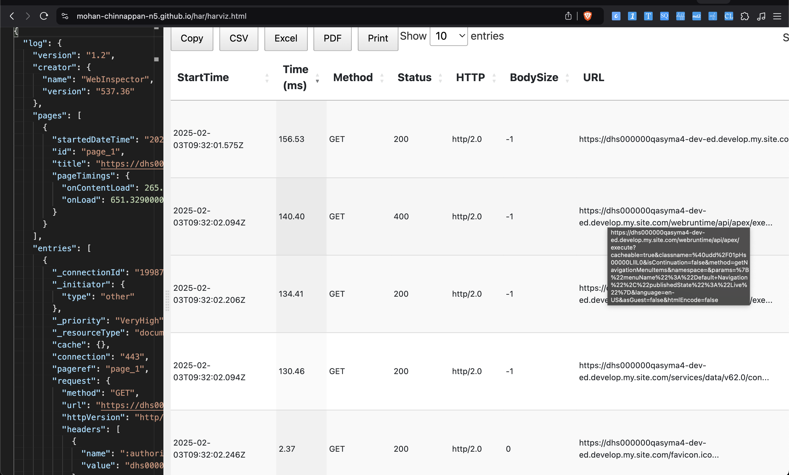

What is LWR (Lightning Web Runtime)
<webruntime-app >
<!-- ... -->
</webruntime-app>
Comparison: LWR Sites vs. Aura Sites
| Feature | LWR Sites (Lightning Web Runtime) | Aura Sites (Experience Builder Sites) |
|---|---|---|
| Technology | Based on Lightning Web Components (LWC) | Based on Aura Framework |
| Performance | Faster and more optimized | Slower due to Aura’s overhead |
| Customization | Uses LWC and standard web tech | Uses Aura components and Site Builder |
| SEO Optimization | Better SEO-friendly features | Limited SEO capabilities |
| Page Rendering | Client-side rendering (CSR) | Server-side rendering (SSR) |
| Flexibility | Full control over UI/UX with code | Drag-and-drop customization |
| Development Approach | Requires more coding | Low-code/no-code approach |
| Use Case | Best for high-performance, custom sites | Best for traditional Experience Cloud sites |
| Salesforce CDN | Uses Salesforce CDN for static assets | Uses Aura framework and standard SF CDN |
| Component Library | LWC-based component library | Aura component library |
| Security | Follows LWC security model | Follows Locker Service for security |
| Best For | High-performance, headless, modern web experiences | Standard Salesforce Experience Cloud sites |
📌 Conclusion
- Use LWR Sites for better performance, SEO, and customizability with modern web standards.
- Use Aura Sites if you prefer low-code solutions and easy customization via the Experience Builder.
We will discuss about building Experience Cloud sites using the Lightning Web Runtime (LWR).
We can use LWR sites for:
- B2C (like Marketing site - unauthenticated user)
- authenticated customer (using the customer personal data)
- agent portals (in-house site for the employees) with LWR and custom Lightning Web Components (LWC) and work with data from Salesforce Org.
LWR offers performance improvements and enhanced developer productivity through features like:
- design tokens
- static CDN deployment.
Let us talk about components, including custom carousels, contact forms, and record pages, emphasizing the flexibility of LWR for customizing site layouts and integrating with Salesforce data.
Details about the App (AZ Insurance)

- Customer Facing B2C App
Layout

<template>
<header data-f6-region class="custom-header">
<slot name="header">
<h1>Default Header</h1>
</slot>
</header>
<main data-f6-region class="slds-var-p-top_large">
<slot>
<p>Default Main Content Area. This can be replaced via the slot.</p>
</slot>
</main>
<footer data-f6-region>
<slot name="footer"> </slot>
</footer>
</template>
import { LightningElement } from 'lwc';
/**
* @slot header This is the header slot
* @slot footer This is the footer slot
* @slot default This is the default slot
*/
export default class CustomThemeLayout extends LightningElement {
}
<?xml version="1.0" encoding="UTF-8" ?>
<LightningComponentBundle xmlns="http://soap.sforce.com/2006/04/metadata">
<apiVersion>60.0</apiVersion>
<isExposed>true</isExposed>
<masterLabel>Custom Theme Layout</masterLabel>
<targets>
<target>lightningCommunity_Page</target>
<target>lightningCommunity_Default</target>
<!-- layout -->
<target>lightningCommunity_Theme_Layout</target>
</targets>
</LightningComponentBundle>
Deployment
sfdx force:source:deploy -m LightningComponentBundle:customThemeLayout
Design Token
- A design token is a variable used to store design-related values (such as colors, spacing, typography, etc.) in a reusable, scalable way across applications.
{
"color-primary": "#0070d2",
"color-text-light": "#ffffff",
"spacing-md": "12px",
"spacing-lg": "24px",
"border-radius-sm": "4px"
}
.button {
background-color: var(--color-primary);
color: var(--color-text-light);
padding: var(--spacing-md) var(--spacing-lg);
border-radius: var(--border-radius-sm);
}
Where Design Tokens are used?
🔹 Where Are Design Tokens Used?
-
✅ Salesforce LWC (Lightning Web Components) – SLDS tokens (--slds-c-button-brand-color-background)
-
✅ Tailwind CSS – Uses utility classes as tokens
-
✅ Figma / Adobe XD – Tokens for design systems
-
✅ CSS Variables – var(--primary-color)
-
✅ Tokens in JSON – Used in Theming & Design Systems

